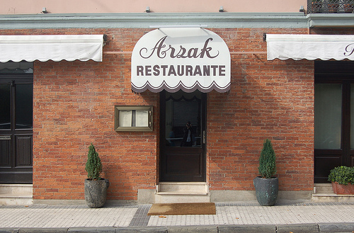
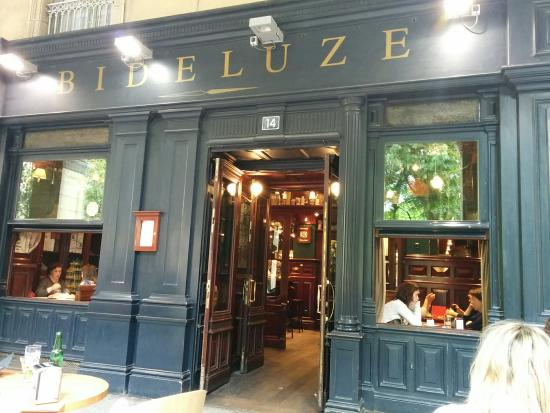

CAMPERO

Campero is a restaurant that service different food near to our school, is a good place because is cheap and delicius. A lot of people go to this place because whenis school time the food they sell is cheaper for students.
ARZAK
This is other restaurant from Donostia, this is also a good restaurant if you want to eat good food. Is a good place if you want to eat different type of food.
BIDELUZE
Is the last restaurant we choice that is a good place and cheap, this restaurant is a very good place to relax and eat something cheap. A lot of people go to this restaurant because this restaurant has a sofa that anyone can use and for that lot of people go to take the sofa and relax.